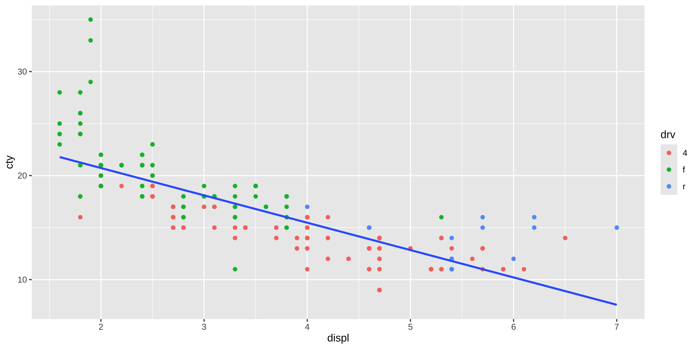
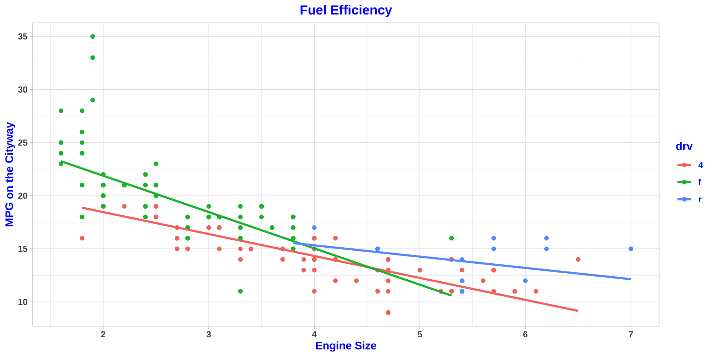
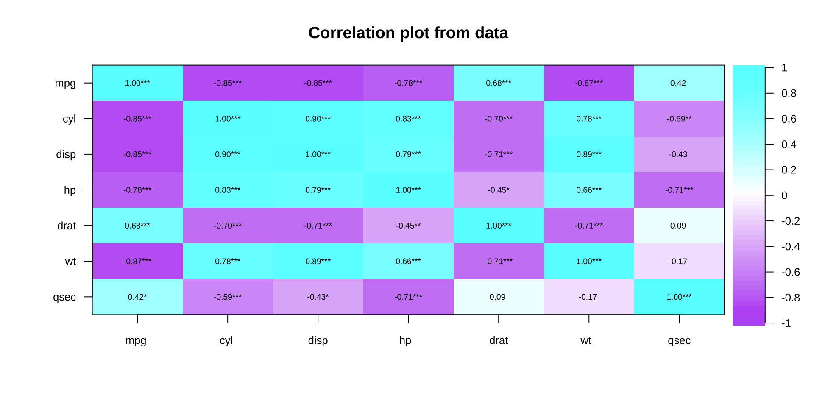

# 安装单个包
install.packages("tidyverse")
install.packages("psych")
# 安装多个包
install.packages(c("tidyverse", "psych"))R快速入门
大纲
1.1 R主界面
1.2 安装包
1.3 项目的创建与管理
1.4 R代码学习方法建议
1.5 常用R代码
1.1 RStudio的界面
1.2 安装包
tidyverse
- 一系列用于数据导入、清洗、转换、可视化与建模的 R 包
R代码: 安装包
R代码: 查看包是否需要更新
options(repos = c(CRAN = "https://cloud.r-project.org")) #使用主镜像
available.packages()["survminer", "Version"][1] "0.5.1"安装包的常见问题
安装包的速度太慢，切换到国内镜像
安装了包后，还需要加载包，方可调用包中的函数
could not find function “XXX”
1.3 项目的创建与管理
创建项目的好处
项目创建后，所有相对路径都以项目文件夹为根目录
不再需要使用 setwd() 指定工作目录，减少路径错误
便于协作与再现
团队成员只需克隆项目文件夹，即可重现整个分析过程
项目文件的管理
数据文件及其导入
代码
导出的文件：图片, Word, PDF等
1.4 R代码学习方法建议
学习代码: 参数项(需要修改的/不需要改动的)
录入代码
查看函数帮助
AI工具的使用
1.5 R常用代码
1.5.1 管道符
安装和加载包tidyverse
install.packages("tidyverse")
library(tidyverse)
# %>% 快捷键
# Windows: Ctrl + Shift + M
# Mac OS : Cmd + Shift + MCode
x <- runif(10,0,1)
x [1] 0.8759192 0.7197084 0.6042939 0.8650551 0.1491360 0.3570960 0.6095346
[8] 0.6629744 0.8413687 0.2888475Code
round(sqrt(abs(log(x))),2) [1] 0.36 0.57 0.71 0.38 1.38 1.01 0.70 0.64 0.42 1.11Code
y <- log(x)
z <- abs(y)
w <- sqrt(z)
v <- round(w,2)
sort(v) [1] 0.36 0.38 0.42 0.57 0.64 0.70 0.71 1.01 1.11 1.38Code
x %>%
log() %>%
abs() %>%
sqrt() %>%
round(2) %>%
sort() [1] 0.36 0.38 0.42 0.57 0.64 0.70 0.71 1.01 1.11 1.38pi %>%
round(2)[1] 3.142 %>%
round(pi,.)[1] 3.146 %>%
round(pi,.)[1] 3.1415936 %>%
round()[1] 6#占位符
paste(1:3, letters[1:3])[1] "1 a" "2 b" "3 c"1:3 %>%
paste(.,letters[.])[1] "1 a" "2 b" "3 c"1.5.2 数据管理
- 筛选个案：filter()
- 选择变量：select()
- 追加变量：mutate()
- 重命名：rename(新名 = 旧名)
- 条件转换：二值转换if_else()
- 条件转换：多值转换case_when()
filter(), select(), mutate()
Code
data(mpg)
#1 miles per gallon = 0.425 kilometers per liter
mpg %>%
filter(year == 1999) %>%
select(displ,cty, hwy,trans) %>%
arrange(displ) %>%
mutate(cty.kpl = 0.425*cty,
hwy.kpl = 0.425*hwy) %>%
mutate(transmission =
if_else(substring(trans, 1,4) == "auto",
"auto","manual"))# A tibble: 117 × 7
displ cty hwy trans cty.kpl hwy.kpl transmission
<dbl> <int> <int> <chr> <dbl> <dbl> <chr>
1 1.6 28 33 manual(m5) 11.9 14.0 manual
2 1.6 24 32 auto(l4) 10.2 13.6 auto
3 1.6 25 32 manual(m5) 10.6 13.6 manual
4 1.6 23 29 manual(m5) 9.78 12.3 manual
5 1.6 24 32 auto(l4) 10.2 13.6 auto
6 1.8 18 29 auto(l5) 7.65 12.3 auto
7 1.8 21 29 manual(m5) 8.92 12.3 manual
8 1.8 18 26 manual(m5) 7.65 11.0 manual
9 1.8 16 25 auto(l5) 6.8 10.6 auto
10 1.8 24 30 auto(l3) 10.2 12.8 auto
# ℹ 107 more rowsmpgnew <- mpg %>%
filter(year == 1999) %>%
select(displ,cty, hwy,trans) %>%
arrange(displ) %>%
mutate(cty.kpl = 0.425*cty,
hwy.kpl = 0.425*hwy) %>%
mutate(transmission =
if_else(substring(trans, 1,4) == "auto",
"auto","manual"))二值转换 if_else()
#二值转换 if_else
mpg$transmission <- if_else(
substring(mpg$trans, 1,4) == "auto",
"auto","manual") 多值转换 case_when()
#多值转换 case_when
mpg$drive <- case_when(
mpg$drv == "f" ~ "front-wheel",
mpg$drv == "r" ~ "rear-wheel",
mpg$drv == "4" ~ "four-wheel")ggplot2——散点图
Code
data(mpg)
mpg %>%
ggplot(aes(displ, cty))+
geom_point()+
geom_smooth(method = lm,
se = F)
mpg %>%
ggplot(aes(displ, cty,
color = drv,
shape = drv))+
geom_point()+
geom_smooth(method = lm,
se = F)
mpg %>%
ggplot(aes(displ, cty,
size = cyl,
shape = drv))+
geom_point()+
geom_smooth(method = lm,
se = F)
mpg %>%
ggplot(aes(displ, cty,
color = drv))+
geom_point()+
geom_smooth(method = lm,
se = F)
mpg %>%
ggplot(aes(displ, cty))+
geom_point(aes(color = drv))+
geom_smooth(method = lm,
se = F)
mpg %>%
ggplot(aes(displ, cty))+
geom_point()+
geom_smooth(aes(color = drv),
method = lm,
se = F)
Code
mpg %>%
ggplot(aes(displ, cty,
color = drv))+
geom_point()+
geom_smooth(method = lm,
se = F)+
labs(x = "Engine Size",
y = "MPG on the Cityway",
title = "Fuel Efficiency")+
theme_light()+
theme(text = element_text(face = "bold",
colour = "blue"),
plot.title = element_text(hjust = 0.5))
描述性统计量的报告
summary(mpg) manufacturer model displ year
Length:234 Length:234 Min. :1.600 Min. :1999
Class :character Class :character 1st Qu.:2.400 1st Qu.:1999
Mode :character Mode :character Median :3.300 Median :2004
Mean :3.472 Mean :2004
3rd Qu.:4.600 3rd Qu.:2008
Max. :7.000 Max. :2008
cyl trans drv cty
Min. :4.000 Length:234 Length:234 Min. : 9.00
1st Qu.:4.000 Class :character Class :character 1st Qu.:14.00
Median :6.000 Mode :character Mode :character Median :17.00
Mean :5.889 Mean :16.86
3rd Qu.:8.000 3rd Qu.:19.00
Max. :8.000 Max. :35.00
hwy fl class
Min. :12.00 Length:234 Length:234
1st Qu.:18.00 Class :character Class :character
Median :24.00 Mode :character Mode :character
Mean :23.44
3rd Qu.:27.00
Max. :44.00 library(psych)
describe(mpg) vars n mean sd median trimmed mad min max range
manufacturer* 1 234 7.76 5.13 6.0 7.68 5.93 1.0 15 14.0
model* 2 234 19.09 11.15 18.5 18.98 14.08 1.0 38 37.0
displ 3 234 3.47 1.29 3.3 3.39 1.33 1.6 7 5.4
year 4 234 2003.50 4.51 2003.5 2003.50 6.67 1999.0 2008 9.0
cyl 5 234 5.89 1.61 6.0 5.86 2.97 4.0 8 4.0
trans* 6 234 5.65 2.88 4.0 5.53 1.48 1.0 10 9.0
drv* 7 234 1.67 0.66 2.0 1.59 1.48 1.0 3 2.0
cty 8 234 16.86 4.26 17.0 16.61 4.45 9.0 35 26.0
hwy 9 234 23.44 5.95 24.0 23.23 7.41 12.0 44 32.0
fl* 10 234 4.63 0.70 5.0 4.77 0.00 1.0 5 4.0
class* 11 234 4.59 1.99 5.0 4.64 2.97 1.0 7 6.0
skew kurtosis se
manufacturer* 0.21 -1.63 0.34
model* 0.11 -1.23 0.73
displ 0.44 -0.91 0.08
year 0.00 -2.01 0.29
cyl 0.11 -1.46 0.11
trans* 0.29 -1.65 0.19
drv* 0.48 -0.76 0.04
cty 0.79 1.43 0.28
hwy 0.36 0.14 0.39
fl* -2.25 5.76 0.05
class* -0.14 -1.52 0.13绘制学术论文中的表1
library(psych)
library(gt)
mpg %>%
select_if(is.numeric) %>%
describe() %>%
select(n,mean,sd, median, min,max) %>%
round(3) %>%
format(nsmall =3) %>%
cbind(variable = c("displ","year","cyl","cty","hwy"),.) %>%
gt() %>%
gtsave(filename = "table1.docx")相关系数及其可视化
Code
library(tidyverse)
library(corrplot)
data(mtcars)
mtcars %>%
select(mpg:qsec) %>%
cor() %>%
round(3) %>%
corrplot(addCoef.col = "white",
number.cex = 0.8,
number.digits = 3,
tl.cex = 0.8,
tl.col = 1,
cl.length = 11,
mar = c(1,1,1,1))
Code
mtcars %>%
select(mpg:qsec) %>%
cor() %>%
round(3) %>%
corrplot(addCoef.col = "white",
number.cex = 0.8,
number.digits = 3,
tl.cex = 0.8,
tl.col = 1,
cl.length = 11,
type = "upper",
method = "square")
Code
library(psych)
gr <- colorRampPalette(c("#B52127", "white", "#2171B5"))
gr <- colorRampPalette(c("purple", "white", "cyan"))
mtcars %>%
select(mpg:qsec) %>%
cor.plot(cex = 0.6,
stars = TRUE,
gr = gr,
cex.axis = 0.8)